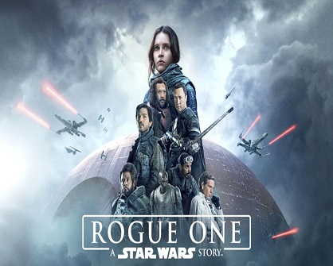
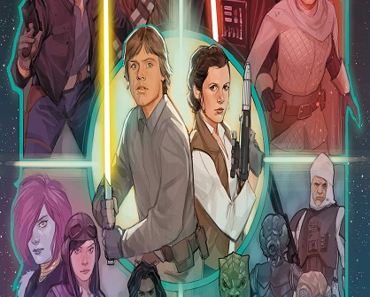

Star Wars Rogue One gets HISTORICAL re-release
Upcoming spin-off Andor is set to expand the story of Rebellions.
To promote the new Disney+ series Lucas Films will re-release
Star Wars Rogue One in theaters. Rogue One's return to theaters
marks the first time that Disney is re-releasing a movie to promote an upcoming Disney+ series.
By: Santino Enriquez
August 15 2022
Read More

Marvel's Star Wars Revelations will premiere November
One shot coming to Netflix will flow Dark Vader as he seeks out The Eye of Webbish Bog on Mustafar,
a mysterious creature strong with the Force. Producer promises to deliver exciting new story without
interfering with established plots.
By: Tobias Meyers
August 8 2022
Read More
Obi Wan Kenobi might not get second season
While the actors are all in on “Obi-Wan” Season 2, the show's creative team is acting a bit more hesitant.
Producer and director says :“For this one, we really did conceive it to be a limited series.
It really is one big story with a beginning, middle and end.
By: Kien Cresswell
July 18 2022
Read More